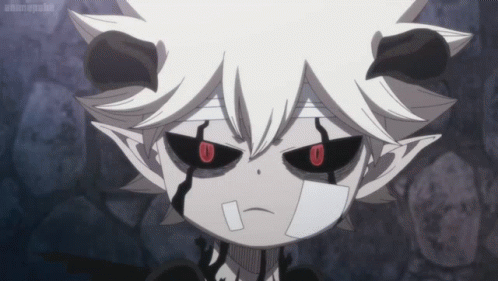

Quem eu sou e qual minha intensão com o blog
Olá, pessoal! Meu nome é Diogo, mas, se preferirem, podem me chamar de Cavaleiro Negro. A ideia deste blog começou como um projeto escolar, mas algo mágico aconteceu enquanto eu trabalhava nele. A paixão pelo tema cresceu de tal forma que decidi transformá-lo em algo mais pessoal e contínuo. Espero que vocês se sintam à vontade para participar, compartilhar suas próprias opiniões e se juntar a mim nesta jornada de exploração e apreciação de "Black Clover". Vamos juntos mergulhar nesse universo fascinante e descobrir o que torna cada momento da série único! 
Aqui, eu me dedico a compartilhar com vocês tudo o que amo sobre "Black Clover", meu anime e mangá favorito. Vou explorar os arcos da série, discutir os personagens que tornam a história tão envolvente e oferecer análises honestas e detalhadas dos capítulos. Minha intenção é criar um espaço onde possamos conversar e debater sobre essa obra incrível, celebrando o que faz dela uma experiência tão especial para todos nós.